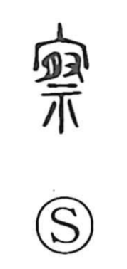

察

Uncategorized
Kun: | On: satsu
inspect ・ inquire ・ discern ・ perceive ・ sympathize
Explanation
察 combines 宀, the roof of a large ceremonial building such as a mausoleum, with 祭, the rite or festival performed there. It evokes worship conducted within that sacred hall to seek out and consult the will of the deities. From this setting, the character comes to mean respectfully inquiring and looking into matters, making things clear through such consultation, and by extension observing, discerning, and thinking.